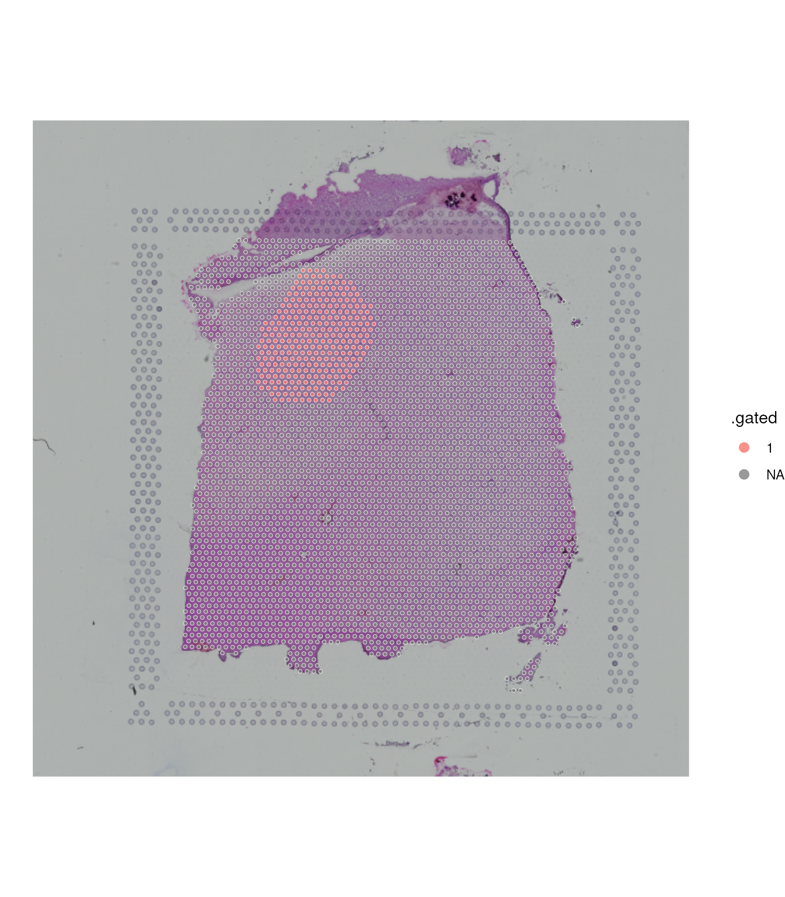
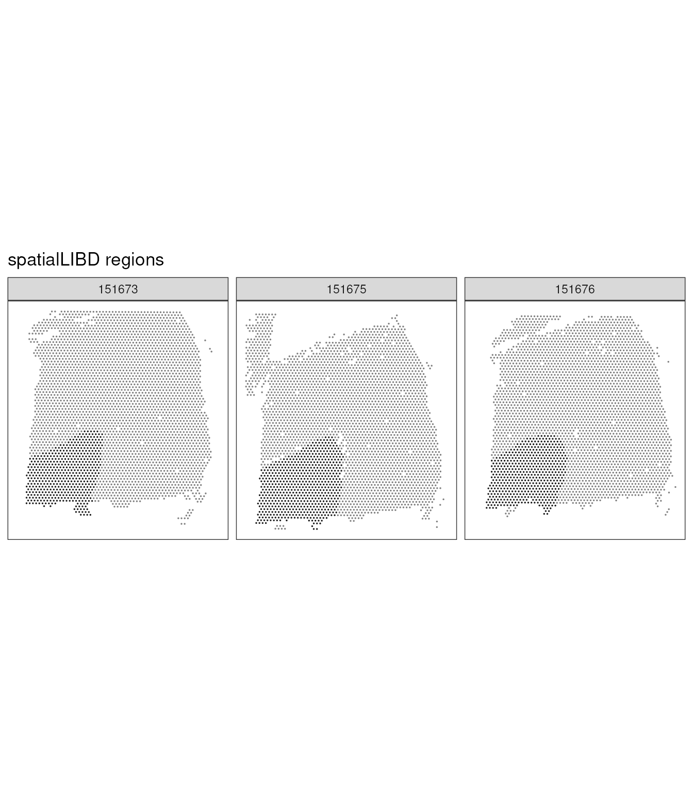
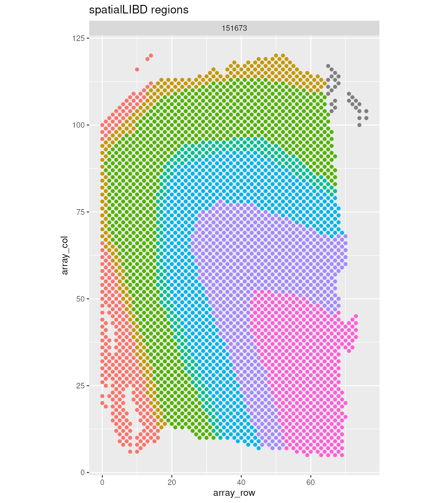
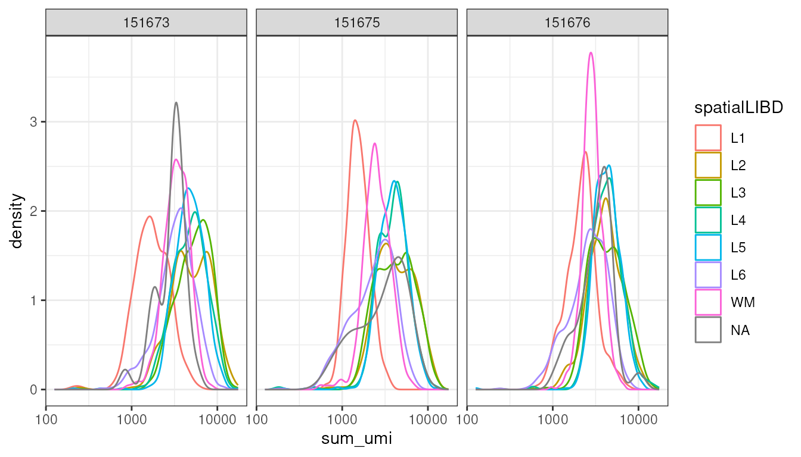
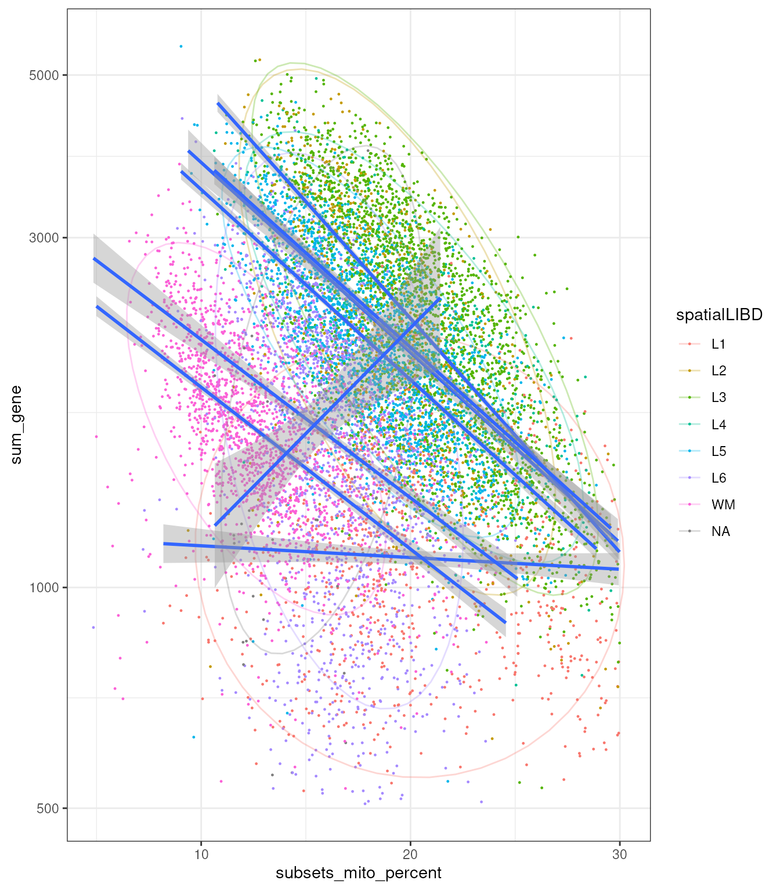
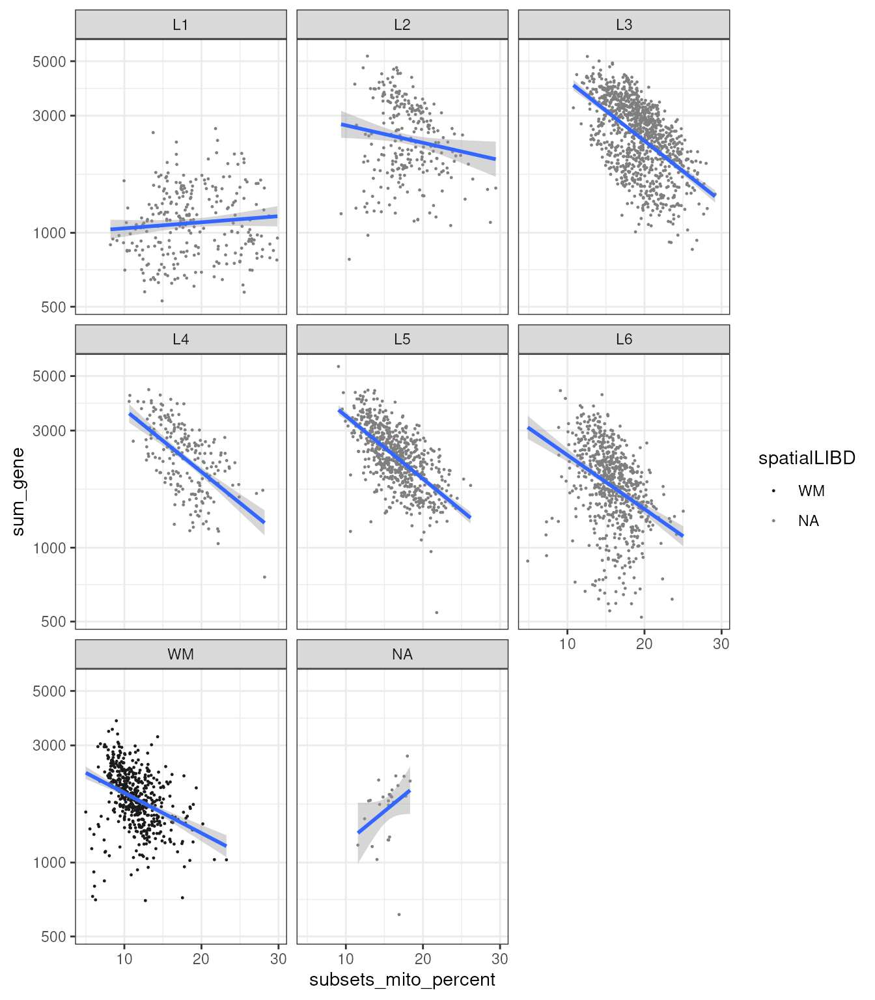

Tidy spatial analyses
Stefano Mangiola, South Australian immunoGENomics Cancer Institute1, Walter and Eliza Hall Institute2
Source:vignettes/Session_2_Tidy_spatial_analyses.Rmd
Session_2_Tidy_spatial_analyses.RmdSession 2: Tidying spatial data
A good introduction of tidyomics can be found here
tidySpatialWorkshop2025 tidy transcriptomic manifesto
tidyomics is an interoperable software ecosystem that
bridges Bioconductor and the tidyverse. tidyomics is
installable with a single homonymous meta-package. This ecosystem
includes three new packages: tidySummarizedExperiment,
tidySingleCellExperiment, and tidySpatialExperiment, and five publicly
available R packages: plyranges, nullranges,
tidyseurat, tidybulk, tidytof.
Importantly, tidyomics leaves the original data containers
and methods unaltered, ensuring compatibility with existing software,
maintainability and long-term Bioconductor support.
tidyomics is presented in “The tidyomics ecosystem:
Enhancing omic data analyses” Hutchison
and Keyes et al., 2025

Installation
let’s make sure we get the latest packages available on github
# In May 2025, the following packages should be installed from github repositories, to use the latest features. In case you have them pre installed, run the following command
BiocManager::install(c("lmweber/ggspavis",
"stemangiola/tidySummarizedExperiment",
"stemangiola/tidySingleCellExperiment",
"william-hutchison/tidySpatialExperiment",
"stemangiola/tidybulk",
"stemangiola/tidygate"),
update = FALSE)Then please restart your R session to make sure the packages we will load will be the ones we intalled mode recently.
Let’s load the libraries needed for this session
library(SpatialExperiment)
# Tidyverse library(tidyverse)
library(ggplot2)
library(plotly)
library(dplyr)
library(tidyr)
library(purrr)
library(glue) # sprintf
library(stringr)
# Plotting
library(colorspace)
library(dittoSeq)
library(ggspavis)
# Analysis
library(scuttle)
library(scater)
library(scran)Similarly to Section 2, this section uses
spatialLIBD and ExperimentHub packages to
gather spatial transcriptomics data.
doi: 10.1038/s41593-020-00787-0
# From https://bioconductor.org/packages/devel/bioc/vignettes/Banksy/inst/doc/multi-sample.html
library(spatialLIBD)
library(ExperimentHub)
spatial_data <-
ExperimentHub::ExperimentHub() |>
spatialLIBD::fetch_data( eh = _, type = "spe")
# Clear the reductions
reducedDims(spatial_data) = NULL
# Make cell ID unique
colnames(spatial_data) = paste0(colnames(spatial_data), colData(spatial_data)$sample_id)
rownames(spatialCoords(spatial_data)) = colnames(spatial_data) # Bug?
# Display the object
spatial_data## class: SpatialExperiment
## dim: 33538 47681
## metadata(0):
## assays(2): counts logcounts
## rownames(33538): ENSG00000243485 ENSG00000237613 ... ENSG00000277475
## ENSG00000268674
## rowData names(9): source type ... gene_search is_top_hvg
## colnames(47681): AAACAACGAATAGTTC-1151507 AAACAAGTATCTCCCA-1151507 ...
## TTGTTTCCATACAACT-1151676 TTGTTTGTGTAAATTC-1151676
## colData names(69): sample_id Cluster ... array_row array_col
## reducedDimNames(0):
## mainExpName: NULL
## altExpNames(0):
## spatialCoords names(2) : pxl_col_in_fullres pxl_row_in_fullres
## imgData names(4): sample_id image_id data scaleFactorIf ExperimentHub should not work. The
spatial_data object from the previous code block can be
downloaded from Zenodo
- 10.5281/zenodo.11233385
1. tidySpatialExperiment package
tidySpatialExperiment provides a bridge between the
SpatialExperiment single-cell package and the tidyverse
[@wickham2019welcome]. It creates an
invisible layer that enables viewing the SpatialExperiment
object as a tidyverse tibble, and provides
SpatialExperiment-compatible dplyr,
tidyr, ggplot and plotly
functions.
If we load the tidySpatialExperiment package and then
view the single cell data, it now displays as a tibble.
library(tidySpatialExperiment)
spatial_data## # A SpatialExperiment-tibble abstraction: 47,681 × 72
## # Features = 33538 | Cells = 47681 | Assays = counts, logcounts
## .cell sample_id Cluster sum_umi sum_gene subject position replicate
## <chr> <chr> <int> <dbl> <int> <chr> <chr> <chr>
## 1 AAACAACGAATAGT… 151507 6 948 727 Br5292 0 1
## 2 AAACAAGTATCTCC… 151507 3 4261 2170 Br5292 0 1
## 3 AAACAATCTACTAG… 151507 2 1969 1093 Br5292 0 1
## 4 AAACACCAATAACT… 151507 5 3368 1896 Br5292 0 1
## 5 AAACAGCTTTCAGA… 151507 1 2981 1620 Br5292 0 1
## 6 AAACAGGGTCTATA… 151507 2 4114 2135 Br5292 0 1
## 7 AAACAGTGTTCCTG… 151507 6 2077 1350 Br5292 0 1
## 8 AAACATTTCCCGGA… 151507 5 4535 2347 Br5292 0 1
## 9 AAACCACTACACAG… 151507 4 6577 2911 Br5292 0 1
## 10 AAACCCGAACGAAA… 151507 3 5029 2393 Br5292 0 1
## # ℹ 47,671 more rows
## # ℹ 64 more variables: subject_position <chr>, discard <lgl>, key <chr>,
## # cell_count <int>, SNN_k50_k4 <int>, SNN_k50_k5 <int>, SNN_k50_k6 <int>,
## # SNN_k50_k7 <int>, SNN_k50_k8 <int>, SNN_k50_k9 <int>, SNN_k50_k10 <int>,
## # SNN_k50_k11 <int>, SNN_k50_k12 <int>, SNN_k50_k13 <int>, SNN_k50_k14 <int>,
## # SNN_k50_k15 <int>, SNN_k50_k16 <int>, SNN_k50_k17 <int>, SNN_k50_k18 <int>,
## # SNN_k50_k19 <int>, SNN_k50_k20 <int>, SNN_k50_k21 <int>, …Data interface, display
If we want to revert to the standard SpatialExperiment
view we can do that.
options("restore_SpatialExperiment_show" = TRUE)
spatial_data## class: SpatialExperiment
## dim: 33538 47681
## metadata(0):
## assays(2): counts logcounts
## rownames(33538): ENSG00000243485 ENSG00000237613 ... ENSG00000277475
## ENSG00000268674
## rowData names(9): source type ... gene_search is_top_hvg
## colnames(47681): AAACAACGAATAGTTC-1151507 AAACAAGTATCTCCCA-1151507 ...
## TTGTTTCCATACAACT-1151676 TTGTTTGTGTAAATTC-1151676
## colData names(69): sample_id Cluster ... array_row array_colIf we want to revert back to tidy SpatialExperiment view we can.
options("restore_SpatialExperiment_show" = FALSE)
spatial_data## # A SpatialExperiment-tibble abstraction: 47,681 × 72
## # Features = 33538 | Cells = 47681 | Assays = counts, logcounts
## .cell sample_id Cluster sum_umi sum_gene subject position replicate
## <chr> <chr> <int> <dbl> <int> <chr> <chr> <chr>
## 1 AAACAACGAATAGT… 151507 6 948 727 Br5292 0 1
## 2 AAACAAGTATCTCC… 151507 3 4261 2170 Br5292 0 1
## 3 AAACAATCTACTAG… 151507 2 1969 1093 Br5292 0 1
## 4 AAACACCAATAACT… 151507 5 3368 1896 Br5292 0 1
## 5 AAACAGCTTTCAGA… 151507 1 2981 1620 Br5292 0 1
## 6 AAACAGGGTCTATA… 151507 2 4114 2135 Br5292 0 1
## 7 AAACAGTGTTCCTG… 151507 6 2077 1350 Br5292 0 1
## 8 AAACATTTCCCGGA… 151507 5 4535 2347 Br5292 0 1
## 9 AAACCACTACACAG… 151507 4 6577 2911 Br5292 0 1
## 10 AAACCCGAACGAAA… 151507 3 5029 2393 Br5292 0 1
## # ℹ 47,671 more rows
## # ℹ 64 more variables: subject_position <chr>, discard <lgl>, key <chr>,
## # cell_count <int>, SNN_k50_k4 <int>, SNN_k50_k5 <int>, SNN_k50_k6 <int>,
## # SNN_k50_k7 <int>, SNN_k50_k8 <int>, SNN_k50_k9 <int>, SNN_k50_k10 <int>,
## # SNN_k50_k11 <int>, SNN_k50_k12 <int>, SNN_k50_k13 <int>, SNN_k50_k14 <int>,
## # SNN_k50_k15 <int>, SNN_k50_k16 <int>, SNN_k50_k17 <int>, SNN_k50_k18 <int>,
## # SNN_k50_k19 <int>, SNN_k50_k20 <int>, SNN_k50_k21 <int>, …Note that rows in this context refers to rows of the abstraction, not rows of the SpatialExperiment which correspond to genes tidySpatialExperiment prioritizes cells as the units of observation in the abstraction, while the full dataset, including measurements of expression of all genes, is still available “in the background”.
Original behaviour is preserved
The tidy representation behaves exactly as a native
SpatialExperiment. It can be interacted with using SpatialExperiment
commands such as assays.
assays(spatial_data)## List of length 2
## names(2): counts logcounts2. Tidyverse commands
We can also interact with our object as we do with any tidyverse
tibble. We can use tidyverse commands, such as
filter, select and mutate to
explore the tidySpatialExperiment object. Some examples are
shown below and more can be seen at the
tidySpatialExperiment website.
Select
We can use select to view columns, for example, to see
the filename, total cellular RNA abundance and cell phase.
If we use select we will also get any view-only columns
returned, such as the UMAP columns generated during the
preprocessing.
spatial_data |> select(.cell, sample_id, in_tissue, spatialLIBD)## # A SpatialExperiment-tibble abstraction: 47,681 × 6
## # Features = 33538 | Cells = 47681 | Assays = counts, logcounts
## .cell sample_id in_tissue spatialLIBD pxl_col_in_fullres pxl_row_in_fullres
## <chr> <chr> <lgl> <fct> <dbl> <dbl>
## 1 AAACAA… 151507 TRUE L1 3276 2514
## 2 AAACAA… 151507 TRUE L3 9178 8520
## 3 AAACAA… 151507 TRUE L1 5133 2878
## 4 AAACAC… 151507 TRUE WM 3462 9581
## 5 AAACAG… 151507 TRUE L6 2779 7663
## 6 AAACAG… 151507 TRUE L6 3053 8143
## 7 AAACAG… 151507 TRUE WM 5109 11263
## 8 AAACAT… 151507 TRUE L5 8830 9837
## 9 AAACCA… 151507 TRUE L3 10228 2894
## 10 AAACCC… 151507 TRUE L3 10075 7924
## # ℹ 47,671 more rowsNote that some columns are always displayed no matter whet. These
column include special slots in the objects such as reduced dimensions,
spatial coordinates (mandatory for SpatialExperiment), and
sample identifier (mandatory for SpatialExperiment).
Although the select operation can be used as a display tool, to
explore our object, it updates the SpatialExperiment
metadata, subsetting the desired columns.
spatial_data |>
select(.cell, sample_id, in_tissue, spatialLIBD) |>
colData()## DataFrame with 47681 rows and 3 columns
## sample_id in_tissue spatialLIBD
## <character> <logical> <factor>
## AAACAACGAATAGTTC-1151507 151507 TRUE L1
## AAACAAGTATCTCCCA-1151507 151507 TRUE L3
## AAACAATCTACTAGCA-1151507 151507 TRUE L1
## AAACACCAATAACTGC-1151507 151507 TRUE WM
## AAACAGCTTTCAGAAG-1151507 151507 TRUE L6
## ... ... ... ...
## TTGTTGTGTGTCAAGA-1151676 151676 TRUE L6
## TTGTTTCACATCCAGG-1151676 151676 TRUE WM
## TTGTTTCATTAGTCTA-1151676 151676 TRUE WM
## TTGTTTCCATACAACT-1151676 151676 TRUE L6
## TTGTTTGTGTAAATTC-1151676 151676 TRUE L1To select columns of interest, we can use tidyverse
powerful pattern-matching tools. For example, using the method
contains to select
## # A SpatialExperiment-tibble abstraction: 47,681 × 6
## # Features = 33538 | Cells = 47681 | Assays = counts, logcounts
## .cell sum_umi sum_gene sample_id pxl_col_in_fullres pxl_row_in_fullres
## <chr> <dbl> <int> <chr> <dbl> <dbl>
## 1 AAACAACGAAT… 948 727 151507 3276 2514
## 2 AAACAAGTATC… 4261 2170 151507 9178 8520
## 3 AAACAATCTAC… 1969 1093 151507 5133 2878
## 4 AAACACCAATA… 3368 1896 151507 3462 9581
## 5 AAACAGCTTTC… 2981 1620 151507 2779 7663
## 6 AAACAGGGTCT… 4114 2135 151507 3053 8143
## 7 AAACAGTGTTC… 2077 1350 151507 5109 11263
## 8 AAACATTTCCC… 4535 2347 151507 8830 9837
## 9 AAACCACTACA… 6577 2911 151507 10228 2894
## 10 AAACCCGAACG… 5029 2393 151507 10075 7924
## # ℹ 47,671 more rowsFilter
We can use filter to subset rows, for example, to keep
our three samples we are going to work with.
We just display the dimensions of the dataset before filtering
ncol(spatial_data)## [1] 47681## # A SpatialExperiment-tibble abstraction: 10,691 × 72
## # Features = 33538 | Cells = 10691 | Assays = counts, logcounts
## .cell sample_id Cluster sum_umi sum_gene subject position replicate
## <chr> <chr> <int> <dbl> <int> <chr> <chr> <chr>
## 1 AAACAAGTATCTCC… 151673 7 8458 3586 Br8100 0 1
## 2 AAACAATCTACTAG… 151673 4 1667 1150 Br8100 0 1
## 3 AAACACCAATAACT… 151673 8 3769 1960 Br8100 0 1
## 4 AAACAGAGCGACTC… 151673 6 5433 2424 Br8100 0 1
## 5 AAACAGCTTTCAGA… 151673 3 4278 2264 Br8100 0 1
## 6 AAACAGGGTCTATA… 151673 3 4004 2178 Br8100 0 1
## 7 AAACAGTGTTCCTG… 151673 8 2376 1432 Br8100 0 1
## 8 AAACATTTCCCGGA… 151673 5 8171 3456 Br8100 0 1
## 9 AAACCCGAACGAAA… 151673 7 12723 4638 Br8100 0 1
## 10 AAACCGGGTAGGTA… 151673 1 1294 888 Br8100 0 1
## # ℹ 10,681 more rows
## # ℹ 64 more variables: subject_position <chr>, discard <lgl>, key <chr>,
## # cell_count <int>, SNN_k50_k4 <int>, SNN_k50_k5 <int>, SNN_k50_k6 <int>,
## # SNN_k50_k7 <int>, SNN_k50_k8 <int>, SNN_k50_k9 <int>, SNN_k50_k10 <int>,
## # SNN_k50_k11 <int>, SNN_k50_k12 <int>, SNN_k50_k13 <int>, SNN_k50_k14 <int>,
## # SNN_k50_k15 <int>, SNN_k50_k16 <int>, SNN_k50_k17 <int>, SNN_k50_k18 <int>,
## # SNN_k50_k19 <int>, SNN_k50_k20 <int>, SNN_k50_k21 <int>, …Here we confirm that the tidy R manipulation has changed the underlining object.
ncol(spatial_data)## [1] 10691In comparison the base-R method recalls the variable multiple times
Or for example, to see just the rows for the cells in spatialLIBD region L1.
spatial_data |> dplyr::filter(sample_id == "151673", spatialLIBD == "L1")## # A SpatialExperiment-tibble abstraction: 273 × 72
## # Features = 33538 | Cells = 273 | Assays = counts, logcounts
## .cell sample_id Cluster sum_umi sum_gene subject position replicate
## <chr> <chr> <int> <dbl> <int> <chr> <chr> <chr>
## 1 AAACAATCTACTAG… 151673 4 1667 1150 Br8100 0 1
## 2 AAAGGTAAGCTGTA… 151673 1 3996 1932 Br8100 0 1
## 3 AAATGTGGGTGCTC… 151673 1 2242 1172 Br8100 0 1
## 4 AAATTGCGGCGGTT… 151673 1 1896 1213 Br8100 0 1
## 5 AACACGCGGCCGCG… 151673 1 1825 1127 Br8100 0 1
## 6 AACATTGGTCAGCC… 151673 1 1808 1148 Br8100 0 1
## 7 AACGTAGTCTACCC… 151673 4 2870 1693 Br8100 0 1
## 8 AACTAGCGTATCGC… 151673 1 1585 923 Br8100 0 1
## 9 AACTCGATAAACAC… 151673 1 2138 1316 Br8100 0 1
## 10 AACTCGATGGCGCA… 151673 1 1404 858 Br8100 0 1
## # ℹ 263 more rows
## # ℹ 64 more variables: subject_position <chr>, discard <lgl>, key <chr>,
## # cell_count <int>, SNN_k50_k4 <int>, SNN_k50_k5 <int>, SNN_k50_k6 <int>,
## # SNN_k50_k7 <int>, SNN_k50_k8 <int>, SNN_k50_k9 <int>, SNN_k50_k10 <int>,
## # SNN_k50_k11 <int>, SNN_k50_k12 <int>, SNN_k50_k13 <int>, SNN_k50_k14 <int>,
## # SNN_k50_k15 <int>, SNN_k50_k16 <int>, SNN_k50_k17 <int>, SNN_k50_k18 <int>,
## # SNN_k50_k19 <int>, SNN_k50_k20 <int>, SNN_k50_k21 <int>, …Flexible, more powerful filters with stringr
spatial_data |>
dplyr::filter(
subject |> str_detect("Br[0-9]1"),
spatialLIBD == "L1"
)## # A SpatialExperiment-tibble abstraction: 890 × 72
## # Features = 33538 | Cells = 890 | Assays = counts, logcounts
## .cell sample_id Cluster sum_umi sum_gene subject position replicate
## <chr> <chr> <int> <dbl> <int> <chr> <chr> <chr>
## 1 AAACAATCTACTAG… 151673 4 1667 1150 Br8100 0 1
## 2 AAAGGTAAGCTGTA… 151673 1 3996 1932 Br8100 0 1
## 3 AAATGTGGGTGCTC… 151673 1 2242 1172 Br8100 0 1
## 4 AAATTGCGGCGGTT… 151673 1 1896 1213 Br8100 0 1
## 5 AACACGCGGCCGCG… 151673 1 1825 1127 Br8100 0 1
## 6 AACATTGGTCAGCC… 151673 1 1808 1148 Br8100 0 1
## 7 AACGTAGTCTACCC… 151673 4 2870 1693 Br8100 0 1
## 8 AACTAGCGTATCGC… 151673 1 1585 923 Br8100 0 1
## 9 AACTCGATAAACAC… 151673 1 2138 1316 Br8100 0 1
## 10 AACTCGATGGCGCA… 151673 1 1404 858 Br8100 0 1
## # ℹ 880 more rows
## # ℹ 64 more variables: subject_position <chr>, discard <lgl>, key <chr>,
## # cell_count <int>, SNN_k50_k4 <int>, SNN_k50_k5 <int>, SNN_k50_k6 <int>,
## # SNN_k50_k7 <int>, SNN_k50_k8 <int>, SNN_k50_k9 <int>, SNN_k50_k10 <int>,
## # SNN_k50_k11 <int>, SNN_k50_k12 <int>, SNN_k50_k13 <int>, SNN_k50_k14 <int>,
## # SNN_k50_k15 <int>, SNN_k50_k16 <int>, SNN_k50_k17 <int>, SNN_k50_k18 <int>,
## # SNN_k50_k19 <int>, SNN_k50_k20 <int>, SNN_k50_k21 <int>, …Summarise
The integration of all spot/pixel/cell-related information in one table abstraction is very powerful to speed-up data exploration ana analysis.
## tidySingleCellExperiment says: A data frame is returned for independent data analysis.## # A tibble: 3 × 2
## sample_id n
## <chr> <int>
## 1 151673 59
## 2 151675 98
## 3 151676 50Mutate
We can use mutate to create a column. For example, we
could create a new Phase_l column that contains a
lower-case version of Phase.
Note that the special columns sample_id,
pxl_col_in_fullres, pxl_row_in_fullres,
PC* are view only and cannot be mutated.
spatial_data |>
mutate(spatialLIBD_lower = tolower(spatialLIBD)) |>
select(.cell, spatialLIBD, spatialLIBD_lower)## # A SpatialExperiment-tibble abstraction: 10,691 × 6
## # Features = 33538 | Cells = 10691 | Assays = counts, logcounts
## .cell spatialLIBD spatialLIBD_lower sample_id pxl_col_in_fullres
## <chr> <fct> <chr> <chr> <dbl>
## 1 AAACAAGTATCTCCCA-… L3 l3 151673 9791
## 2 AAACAATCTACTAGCA-… L1 l1 151673 5769
## 3 AAACACCAATAACTGC-… WM wm 151673 4068
## 4 AAACAGAGCGACTCCT-… L3 l3 151673 9271
## 5 AAACAGCTTTCAGAAG-… L5 l5 151673 3393
## 6 AAACAGGGTCTATATT-… L6 l6 151673 3665
## 7 AAACAGTGTTCCTGGG-… WM wm 151673 5709
## 8 AAACATTTCCCGGATT-… L3 l3 151673 9437
## 9 AAACCCGAACGAAATC-… L2 l2 151673 10690
## 10 AAACCGGGTAGGTACC-… L6 l6 151673 4703
## # ℹ 10,681 more rows
## # ℹ 1 more variable: pxl_row_in_fullres <dbl>We can update the underlying SpatialExperiment object,
for future analyses. And confirm that the SpatialExperiment
metadata has been mutated.
spatial_data =
spatial_data |>
mutate(spatialLIBD_lower = tolower(spatialLIBD))
spatial_data |>
colData() |>
_[,c("spatialLIBD", "spatialLIBD_lower")]## DataFrame with 10691 rows and 2 columns
## spatialLIBD spatialLIBD_lower
## <factor> <character>
## AAACAAGTATCTCCCA-1151673 L3 l3
## AAACAATCTACTAGCA-1151673 L1 l1
## AAACACCAATAACTGC-1151673 WM wm
## AAACAGAGCGACTCCT-1151673 L3 l3
## AAACAGCTTTCAGAAG-1151673 L5 l5
## ... ... ...
## TTGTTGTGTGTCAAGA-1151676 L6 l6
## TTGTTTCACATCCAGG-1151676 WM wm
## TTGTTTCATTAGTCTA-1151676 WM wm
## TTGTTTCCATACAACT-1151676 L6 l6
## TTGTTTGTGTAAATTC-1151676 L1 l1We can mutate columns for on-the-fly analyses and exploration. Let’s suppose one column has capitalisation inconsistencies, and we want to apply a unique filter.
## # A SpatialExperiment-tibble abstraction: 1,698 × 73
## # Features = 33538 | Cells = 1698 | Assays = counts, logcounts
## .cell sample_id Cluster sum_umi sum_gene subject position replicate
## <chr> <chr> <int> <dbl> <int> <chr> <chr> <chr>
## 1 AAACACCAATAACT… 151673 8 3769 1960 Br8100 0 1
## 2 AAACAGTGTTCCTG… 151673 8 2376 1432 Br8100 0 1
## 3 AAACCGTTCGTCCA… 151673 8 3649 1927 Br8100 0 1
## 4 AAACTTAATTGCAC… 151673 8 3095 1719 Br8100 0 1
## 5 AAAGGCCCTATAAT… 151673 8 3831 1961 Br8100 0 1
## 6 AAAGTAGCATTGCT… 151673 8 3304 1888 Br8100 0 1
## 7 AAATTGATAGTCCT… 151673 8 3257 1806 Br8100 0 1
## 8 AAATTTGCGGGTGT… 151673 6 3082 1780 Br8100 0 1
## 9 AACAATACATTGTC… 151673 8 5869 2823 Br8100 0 1
## 10 AACAGCTGTGTGGC… 151673 8 4650 2310 Br8100 0 1
## # ℹ 1,688 more rows
## # ℹ 65 more variables: subject_position <chr>, discard <lgl>, key <chr>,
## # cell_count <int>, SNN_k50_k4 <int>, SNN_k50_k5 <int>, SNN_k50_k6 <int>,
## # SNN_k50_k7 <int>, SNN_k50_k8 <int>, SNN_k50_k9 <int>, SNN_k50_k10 <int>,
## # SNN_k50_k11 <int>, SNN_k50_k12 <int>, SNN_k50_k13 <int>, SNN_k50_k14 <int>,
## # SNN_k50_k15 <int>, SNN_k50_k16 <int>, SNN_k50_k17 <int>, SNN_k50_k18 <int>,
## # SNN_k50_k19 <int>, SNN_k50_k20 <int>, SNN_k50_k21 <int>, …Extract
We can use tidyverse commands to polish an annotation column. We will extract the sample, and group information from the file name column into separate columns.
# Simulate file path
spatial_data = spatial_data |> mutate(file_path = glue("../data/single_cell/{sample_id}/outs/raw_feature_bc_matrix/"))
# First take a look at the file column
spatial_data |> select(.cell, file_path)## # A SpatialExperiment-tibble abstraction: 10,691 × 5
## # Features = 33538 | Cells = 10691 | Assays = counts, logcounts
## .cell file_path sample_id pxl_col_in_fullres pxl_row_in_fullres
## <chr> <glue> <chr> <dbl> <dbl>
## 1 AAACAAGTATCTCCCA-1… ../data/… 151673 9791 8468
## 2 AAACAATCTACTAGCA-1… ../data/… 151673 5769 2807
## 3 AAACACCAATAACTGC-1… ../data/… 151673 4068 9505
## 4 AAACAGAGCGACTCCT-1… ../data/… 151673 9271 4151
## 5 AAACAGCTTTCAGAAG-1… ../data/… 151673 3393 7583
## 6 AAACAGGGTCTATATT-1… ../data/… 151673 3665 8064
## 7 AAACAGTGTTCCTGGG-1… ../data/… 151673 5709 11194
## 8 AAACATTTCCCGGATT-1… ../data/… 151673 9437 9783
## 9 AAACCCGAACGAAATC-1… ../data/… 151673 10690 7875
## 10 AAACCGGGTAGGTACC-1… ../data/… 151673 4703 7473
## # ℹ 10,681 more rowsExtract specific identifiers from complex data paths, simplifying the dataset by isolating crucial metadata. This process allows for clearer identification of samples based on their file paths, improving data organization.
# Create column for sample
spatial_data <- spatial_data |>
# Extract sample ID from file path and display the updated data
tidyr::extract(file_path, "sample_id_from_file_path", "\\.\\./data/single_cell/([0-9]+)/outs/raw_feature_bc_matrix/", remove = FALSE)
# Take a look
spatial_data |> select(.cell, sample_id_from_file_path, everything())## # A SpatialExperiment-tibble abstraction: 10,691 × 75
## # Features = 33538 | Cells = 10691 | Assays = counts, logcounts
## .cell sample_id_from_file_…¹ sample_id Cluster sum_umi sum_gene subject
## <chr> <chr> <chr> <int> <dbl> <int> <chr>
## 1 AAACAAGTAT… 151673 151673 7 8458 3586 Br8100
## 2 AAACAATCTA… 151673 151673 4 1667 1150 Br8100
## 3 AAACACCAAT… 151673 151673 8 3769 1960 Br8100
## 4 AAACAGAGCG… 151673 151673 6 5433 2424 Br8100
## 5 AAACAGCTTT… 151673 151673 3 4278 2264 Br8100
## 6 AAACAGGGTC… 151673 151673 3 4004 2178 Br8100
## 7 AAACAGTGTT… 151673 151673 8 2376 1432 Br8100
## 8 AAACATTTCC… 151673 151673 5 8171 3456 Br8100
## 9 AAACCCGAAC… 151673 151673 7 12723 4638 Br8100
## 10 AAACCGGGTA… 151673 151673 1 1294 888 Br8100
## # ℹ 10,681 more rows
## # ℹ abbreviated name: ¹sample_id_from_file_path
## # ℹ 68 more variables: position <chr>, replicate <chr>, subject_position <chr>,
## # discard <lgl>, key <chr>, cell_count <int>, SNN_k50_k4 <int>,
## # SNN_k50_k5 <int>, SNN_k50_k6 <int>, SNN_k50_k7 <int>, SNN_k50_k8 <int>,
## # SNN_k50_k9 <int>, SNN_k50_k10 <int>, SNN_k50_k11 <int>, SNN_k50_k12 <int>,
## # SNN_k50_k13 <int>, SNN_k50_k14 <int>, SNN_k50_k15 <int>, …Unite
We could use tidyverse unite to combine columns, for
example to create a new column for sample id combining the sample and
subject id (BCB) columns.
spatial_data <- spatial_data |> unite("sample_subject", sample_id, subject, remove = FALSE)
# Take a look
spatial_data |> select(.cell, sample_id, sample_subject, subject)## # A SpatialExperiment-tibble abstraction: 10,691 × 6
## # Features = 33538 | Cells = 10691 | Assays = counts, logcounts
## .cell sample_id sample_subject subject pxl_col_in_fullres pxl_row_in_fullres
## <chr> <chr> <chr> <chr> <dbl> <dbl>
## 1 AAACA… 151673 151673_Br8100 Br8100 9791 8468
## 2 AAACA… 151673 151673_Br8100 Br8100 5769 2807
## 3 AAACA… 151673 151673_Br8100 Br8100 4068 9505
## 4 AAACA… 151673 151673_Br8100 Br8100 9271 4151
## 5 AAACA… 151673 151673_Br8100 Br8100 3393 7583
## 6 AAACA… 151673 151673_Br8100 Br8100 3665 8064
## 7 AAACA… 151673 151673_Br8100 Br8100 5709 11194
## 8 AAACA… 151673 151673_Br8100 Br8100 9437 9783
## 9 AAACC… 151673 151673_Br8100 Br8100 10690 7875
## 10 AAACC… 151673 151673_Br8100 Br8100 4703 7473
## # ℹ 10,681 more rows3. Advanced filtering/gating and pseudobulk
tidySpatialExperiment provide a interactive advanced
tool for gating region of interest for streamlined exploratory
analyses.
This capability is powered by tidygate. We show how you
can visualise your data and manually drawing gates to select one or more
regions of interest using an intuitive tidy grammar. From https://bioconductor.org/packages/devel/bioc/vignettes/tidySpatialExperiment/inst/doc/overview.html
Let’s draw an arbitrary gate interactively
spatial_data =
spatial_data |>
# Filter one sample
filter(in_tissue, sample_id=="151673") |>
# Gate based on tissue morphology
tidySpatialExperiment::gate(alpha = 0.1, colour = "spatialLIBD")
spatial_data_gated = tidygate_env$gatesYou can reload a pre-made gate for reproducibility
data(spatial_data_gated)## Warning in data(spatial_data_gated): data set 'spatial_data_gated' not found
spatial_data =
spatial_data |>
# Filter one sample
filter(in_tissue, sample_id=="151673") |>
# Gate based on tissue morphology
tidySpatialExperiment::gate(alpha = 0.1, colour = "spatialLIBD", programmatic_gates = tidySpatialWorkshop2025::spatial_data_gated) tidySpatialExperiment added a .gated column
to the SpatialExperiment object. We can see this column in
its tibble abstraction.
spatial_data |> select(.cell, .gated)## # A SpatialExperiment-tibble abstraction: 3,639 × 5
## # Features = 33538 | Cells = 3639 | Assays = counts, logcounts
## .cell .gated sample_id pxl_col_in_fullres pxl_row_in_fullres
## <chr> <chr> <chr> <dbl> <dbl>
## 1 AAACAAGTATCTCCCA-1151… NA 151673 9791 8468
## 2 AAACAATCTACTAGCA-1151… NA 151673 5769 2807
## 3 AAACACCAATAACTGC-1151… NA 151673 4068 9505
## 4 AAACAGAGCGACTCCT-1151… NA 151673 9271 4151
## 5 AAACAGCTTTCAGAAG-1151… NA 151673 3393 7583
## 6 AAACAGGGTCTATATT-1151… NA 151673 3665 8064
## 7 AAACAGTGTTCCTGGG-1151… NA 151673 5709 11194
## 8 AAACATTTCCCGGATT-1151… NA 151673 9437 9783
## 9 AAACCCGAACGAAATC-1151… NA 151673 10690 7875
## 10 AAACCGGGTAGGTACC-1151… NA 151673 4703 7473
## # ℹ 3,629 more rowsWe can count how many pixels we selected with simple
tidyverse grammar
spatial_data |> count(.gated)## tidySingleCellExperiment says: A data frame is returned for independent data analysis.## # A tibble: 2 × 2
## .gated n
## <chr> <int>
## 1 1 302
## 2 NA 3337To have a visual feedback of our selection we can plot the slide annotating by our newly created column.
spatial_data |>
ggspavis::plotVisium(annotate = ".gated")

We can also filter, for further analyses
spatial_data |>
filter(.gated == 1)## # A SpatialExperiment-tibble abstraction: 302 × 77
## # Features = 33538 | Cells = 302 | Assays = counts, logcounts
## .cell sample_subject sample_id Cluster sum_umi sum_gene subject position
## <chr> <chr> <chr> <int> <dbl> <int> <chr> <chr>
## 1 AAAGACCCA… 151673_Br8100 151673 4 4333 2160 Br8100 0
## 2 AAAGGGCAG… 151673_Br8100 151673 1 2583 1380 Br8100 0
## 3 AAAGTCACT… 151673_Br8100 151673 2 4858 2352 Br8100 0
## 4 AACCATGGG… 151673_Br8100 151673 4 3151 1714 Br8100 0
## 5 AACCCAGAG… 151673_Br8100 151673 4 3878 2113 Br8100 0
## 6 AACGATAGA… 151673_Br8100 151673 2 4407 2188 Br8100 0
## 7 AACGTCAGA… 151673_Br8100 151673 2 3066 1775 Br8100 0
## 8 AACTGGTGT… 151673_Br8100 151673 7 4138 2084 Br8100 0
## 9 AAGGCGCGT… 151673_Br8100 151673 1 2662 1483 Br8100 0
## 10 AAGTAGAAG… 151673_Br8100 151673 5 6235 2885 Br8100 0
## # ℹ 292 more rows
## # ℹ 69 more variables: replicate <chr>, subject_position <chr>, discard <lgl>,
## # key <chr>, cell_count <int>, SNN_k50_k4 <int>, SNN_k50_k5 <int>,
## # SNN_k50_k6 <int>, SNN_k50_k7 <int>, SNN_k50_k8 <int>, SNN_k50_k9 <int>,
## # SNN_k50_k10 <int>, SNN_k50_k11 <int>, SNN_k50_k12 <int>, SNN_k50_k13 <int>,
## # SNN_k50_k14 <int>, SNN_k50_k15 <int>, SNN_k50_k16 <int>, SNN_k50_k17 <int>,
## # SNN_k50_k18 <int>, SNN_k50_k19 <int>, SNN_k50_k20 <int>, …Exercise 2.1 Gate roughly the white matter layer of the tissue (bottom-left) and visualise in UMAP reduced dimensions where this manual gate is distributed.
- Calculate PCA, UMAPs as we did for Session 1
- Gate the area of white matter
- Plot UMAP dimensions according to the gating
4. Work with features
By default tidySpatialExperiment (as well as
tidySingleCellExperiment) focus their tidy abstraction on
pixels and cells, as this is the key analysis and visualisation unit in
spatial and single-cell data. This has proven to be a practical solution
to achieve elegant tidy analyses and visualisation.
In contrast, bulk data focuses to features/genes for analysis. In
this case its tidy representation with
tidySummarizedExperiment prioritise features, exposing them
to the user.
If you want to interact with features, the method
join_features will be helpful. For example, we can add one
or more features of interest to our abstraction.
Let’s add the astrocyte marker GFAP
Find out ENSEMBL ID
## # A tibble: 1 × 9
## source type gene_id gene_version gene_name gene_source gene_biotype
## <fct> <fct> <chr> <chr> <chr> <chr> <chr>
## 1 ensembl_havana gene ENSG0000… 12 GFAP ensembl_ha… protein_cod…
## # ℹ 2 more variables: gene_search <chr>, is_top_hvg <lgl>Join the feature to the metadata
spatial_data =
spatial_data |>
join_features("ENSG00000131095", shape="wide")
spatial_data |>
select(.cell, ENSG00000131095)## # A SpatialExperiment-tibble abstraction: 3,639 × 5
## # Features = 33538 | Cells = 3639 | Assays = counts, logcounts
## .cell ENSG00000131095 sample_id pxl_col_in_fullres pxl_row_in_fullres
## <chr> <dbl> <chr> <dbl> <dbl>
## 1 AAACAAGTATCT… 0 151673 9791 8468
## 2 AAACAATCTACT… 3.39 151673 5769 2807
## 3 AAACACCAATAA… 4.18 151673 4068 9505
## 4 AAACAGAGCGAC… 0 151673 9271 4151
## 5 AAACAGCTTTCA… 0 151673 3393 7583
## 6 AAACAGGGTCTA… 1.83 151673 3665 8064
## 7 AAACAGTGTTCC… 3.94 151673 5709 11194
## 8 AAACATTTCCCG… 0 151673 9437 9783
## 9 AAACCCGAACGA… 1.02 151673 10690 7875
## 10 AAACCGGGTAGG… 1.86 151673 4703 7473
## # ℹ 3,629 more rowsExercise 2.2 Join the endothelial marker PECAM1 (CD31, look for ENSEMBL ID), and plot in space the pixel that are in the 0.75 percentile of EPCAM1 expression. Are the PECAM1-positive pixels (endothelial?) spatially clustered?
- Get the ENSEMBL ID
- Join the feature to the tidy data abstraction
- Calculate the 0.75 quantile across all pixels
mutate() - Label the cells with high PECAM1
- Plot the slide colouring for the new label
5. Summarisation/aggregation
Distinct
We can quickly explore the elements of a variable with distinct
spatial_data |>
distinct(sample_id)## tidySingleCellExperiment says: A data frame is returned for independent data analysis.## # A tibble: 1 × 1
## sample_id
## <chr>
## 1 151673We can distinct across multiple variables
spatial_data |>
distinct(sample_id, Cluster)## tidySingleCellExperiment says: A data frame is returned for independent data analysis.## # A tibble: 8 × 2
## sample_id Cluster
## <chr> <int>
## 1 151673 7
## 2 151673 4
## 3 151673 8
## 4 151673 6
## 5 151673 3
## 6 151673 5
## 7 151673 1
## 8 151673 2Count
We can gather more information counting the instances of a variable
## tidySingleCellExperiment says: A data frame is returned for independent data analysis.## # A tibble: 8 × 2
## Cluster n
## <int> <int>
## 1 1 768
## 2 2 597
## 3 3 467
## 4 4 413
## 5 5 372
## 6 6 362
## 7 7 340
## 8 8 320We calculate summary statistics of a subset of data
## tidySingleCellExperiment says: A data frame is returned for independent data analysis.## # A tibble: 1 × 2
## sample_id n
## <chr> <int>
## 1 151673 768Aggregate
For summarised analyses, we can aggregate pixels/cells as pseudobulk
with the function aggregate_cells. This also works for
SingleCellExeriment.We obtain a
SummarizedExperiment.
spe_regions_aggregated <-
spatial_data |>
aggregate_cells(c(sample_id, spatialLIBD))
spe_regions_aggregated## class: SummarizedExperiment
## dim: 33538 8
## metadata(0):
## assays(2): counts logcounts
## rownames(33538): ENSG00000000003 ENSG00000000005 ... ENSG00000285509
## ENSG00000285513
## rowData names(1): feature
## colnames(8): 151673___L1 151673___L2 ... 151673___NA 151673___WM
## colData names(16): sample_id spatialLIBD ... file_path
## sample_id_from_file_pathtidyomics allows to cross spatial, single-cell
(Bioconductor and seurat), and bulk keeping a consistent interface.
##
## Attaching package: 'tidySummarizedExperiment'## The following object is masked from 'package:tidySingleCellExperiment':
##
## tidy## The following object is masked from 'package:generics':
##
## tidy
spe_regions_aggregated## # A SummarizedExperiment-tibble abstraction: 268,304 × 21
## # Features=33538 | Samples=8 | Assays=counts, logcounts
## .feature .sample counts logcounts sample_id spatialLIBD .aggregated_cells
## <chr> <chr> <dbl> <dbl> <chr> <fct> <int>
## 1 ENSG0000000… 151673… 4 6.06 151673 L1 273
## 2 ENSG0000000… 151673… 0 0 151673 L1 273
## 3 ENSG0000000… 151673… 15 20.6 151673 L1 273
## 4 ENSG0000000… 151673… 3 3.24 151673 L1 273
## 5 ENSG0000000… 151673… 0 0 151673 L1 273
## 6 ENSG0000000… 151673… 1 2.01 151673 L1 273
## 7 ENSG0000000… 151673… 7 9.46 151673 L1 273
## 8 ENSG0000000… 151673… 11 15.4 151673 L1 273
## 9 ENSG0000000… 151673… 10 13.9 151673 L1 273
## 10 ENSG0000000… 151673… 6 9.65 151673 L1 273
## # ℹ 40 more rows
## # ℹ 14 more variables: sample_subject <chr>, subject <chr>, position <chr>,
## # replicate <chr>, subject_position <chr>, layer_guess <fct>,
## # layer_guess_reordered <fct>, layer_guess_reordered_short <fct>,
## # ManualAnnotation <chr>, in_tissue <lgl>, spatialLIBD_lower <chr>,
## # file_path <glue>, sample_id_from_file_path <chr>, feature <chr>You will be able to apply the familiar tidyverse
operations
spe_regions_aggregated |>
filter(sample_id == "151673")## # A SummarizedExperiment-tibble abstraction: 268,304 × 21
## # Features=33538 | Samples=8 | Assays=counts, logcounts
## .feature .sample counts logcounts sample_id spatialLIBD .aggregated_cells
## <chr> <chr> <dbl> <dbl> <chr> <fct> <int>
## 1 ENSG0000000… 151673… 4 6.06 151673 L1 273
## 2 ENSG0000000… 151673… 0 0 151673 L1 273
## 3 ENSG0000000… 151673… 15 20.6 151673 L1 273
## 4 ENSG0000000… 151673… 3 3.24 151673 L1 273
## 5 ENSG0000000… 151673… 0 0 151673 L1 273
## 6 ENSG0000000… 151673… 1 2.01 151673 L1 273
## 7 ENSG0000000… 151673… 7 9.46 151673 L1 273
## 8 ENSG0000000… 151673… 11 15.4 151673 L1 273
## 9 ENSG0000000… 151673… 10 13.9 151673 L1 273
## 10 ENSG0000000… 151673… 6 9.65 151673 L1 273
## # ℹ 40 more rows
## # ℹ 14 more variables: sample_subject <chr>, subject <chr>, position <chr>,
## # replicate <chr>, subject_position <chr>, layer_guess <fct>,
## # layer_guess_reordered <fct>, layer_guess_reordered_short <fct>,
## # ManualAnnotation <chr>, in_tissue <lgl>, spatialLIBD_lower <chr>,
## # file_path <glue>, sample_id_from_file_path <chr>, feature <chr>6. tidyfying your workflow
We will take workflow used in Session 2, performed using mostly base R syntax and convert it to tidy R syntax. We will show you how the readability and modularity of your workflow will improve.
Subset to keep only on-tissue spots.
Base R approach:
spatial_data <- spatial_data[, colData(spatial_data)$in_tissue == 1]Tidyverse Approach:
spatial_data <-
spatial_data |>
filter(in_tissue == 1) Specific Differences and Advantages:
The tidyverse filter() function clearly
states the intent to filter the dataset, whereas the Base R approach
uses subsetting which might not be immediately clear to someone
unfamiliar with the syntax.
The tidyverse approach inherently supports chaining
further operations without manually checking dimensions, assuming that
users trust the operation to behave as expected.
Manipulating feature information
For SingleCellExperiment there is no tidy API for
manipulating feature wise data yet, on the contrary for
SummarizedExperiment, because gene-centric the abstraction
allow for direct gene information manipulation. Currently,
tidySingleCellExperiment and
tidySpatialExperiment do not prioritize the manipulation of
features (genes).
While these functions can employ genes for cell manipulation and
visualisation, as demonstrated in join_features(), they
lack tools for altering feature-related information. Instead, their
primary focus is on cell information, which serves as the main
observational unit in single-cell data. This contrasts with bulk RNA
sequencing data, where features are more central.
The tidy API for SingleCellExperiment has
feature-manipulation API among our plans. See tidyomics
challenges
Base R approach:
is_gene_mitochondrial <- grepl("(^MT-)|(^mt-)", rowData(spatial_data)$gene_name)
rowData(spatial_data)$gene_name[is_gene_mitochondrial]## [1] "MT-ND1" "MT-ND2" "MT-CO1" "MT-CO2" "MT-ATP8" "MT-ATP6" "MT-CO3"
## [8] "MT-ND3" "MT-ND4L" "MT-ND4" "MT-ND5" "MT-ND6" "MT-CYB"Quality Control:
Apply quality control measures to exclude cells based on mitochondrial content and read/gene count, a common indicator of cell health and viability.
Base R approach:
spatial_data <- addPerCellQC(spatial_data, subsets = list(mito = is_gene_mitochondrial))
## Select expressed genes threshold
qc_mitochondrial_transcription <- colData(spatial_data)$subsets_mito_percent > 30
colData(spatial_data)$qc_mitochondrial_transcription <- qc_mitochondrial_transcriptionTidyverse Approach:
spatial_data <-
spatial_data |>
# Add QC
addPerCellQC(subsets = list(mito = is_gene_mitochondrial)) |>
## Add threshold in colData
mutate(
qc_mitochondrial_transcription = subsets_mito_percent > 30
)
spatial_data |> select(.cell, qc_mitochondrial_transcription)## # A SpatialExperiment-tibble abstraction: 3,639 × 5
## # Features = 33538 | Cells = 3639 | Assays = counts, logcounts
## .cell qc_mitochondrial_tra…¹ sample_id pxl_col_in_fullres pxl_row_in_fullres
## <chr> <lgl> <chr> <dbl> <dbl>
## 1 AAACA… FALSE 151673 9791 8468
## 2 AAACA… FALSE 151673 5769 2807
## 3 AAACA… FALSE 151673 4068 9505
## 4 AAACA… FALSE 151673 9271 4151
## 5 AAACA… FALSE 151673 3393 7583
## 6 AAACA… FALSE 151673 3665 8064
## 7 AAACA… FALSE 151673 5709 11194
## 8 AAACA… FALSE 151673 9437 9783
## 9 AAACC… FALSE 151673 10690 7875
## 10 AAACC… FALSE 151673 4703 7473
## # ℹ 3,629 more rows
## # ℹ abbreviated name: ¹qc_mitochondrial_transcriptionSpecific Differences and Advantages:
tidyverse pipelines these operations without storing
intermediate results, directly updating the dataset. Base R separates
these steps, requiring manual tracking of variables and updating the
dataset in multiple steps, increasing complexity and potential for
errors.
Direct Data Mutation: Tidyverse directly mutates the dataset within the pipeline, whereas Base R extracts, computes, and then reassigns values, which can be more verbose and less efficient in terms of workflow clarity and execution.
Group-specific analyses
Base R approach:
# get gene for subset
genes <- !grepl(pattern = "^Rp[l|s]|Mt", x = rownames(spatial_data))
# Convert to list
spatial_data_list <- lapply(unique(spatial_data$sample_id), function(x) spatial_data[, spatial_data$sample_id == x])
# Detect sample-specific hughly-variable genes
marker_genes =
lapply( spatial_data_list,
function(x){
dec = scran::modelGeneVar(x, subset.row = genes)
scran::getTopHVGs(dec, n = 1000)
}
)
head(unique(unlist(marker_genes)))Tidyverse Approach: group_split
# get gene for subset
genes <- !grepl(pattern = "^Rp[l|s]|Mt", x = rownames(spatial_data))
marker_genes =
spatial_data |>
# Grouping
group_split(sample_id) |>
# Loop across the list elements
map(~ .x |>
scran::modelGeneVar(subset.row = genes) |>
scran::getTopHVGs(n = 1000)
) |>
reduce(union)
marker_genes |> head()## [1] "ENSG00000123560" "ENSG00000197971" "ENSG00000110484" "ENSG00000131095"
## [5] "ENSG00000109846" "ENSG00000173786"Tidyverse Approach: nest
spatial_data |>
nest(sample_data = -sample_id) |>
mutate(marker_genes = map(sample_data, ~
.x |>
scran::modelGeneVar(subset.row = genes) |>
scran::getTopHVGs(n = 1000)
)) ## # A tibble: 1 × 3
## sample_id sample_data marker_genes
## <chr> <list> <list>
## 1 151673 <SptlExpr[,3639]> <chr [1,000]>Specific Differences and Advantages:
tidyverse neatly handles grouping and plotting within a
single chain, using nest() or group_split()
and map() for compartmentalized operations, which organizes
the workflow into a coherent sequence.
tidyverse’s map() is a powerful functional language
tool, which can return arbitrary types, such as map_int,
map_char, map_lgl.It is integrated into the
data manipulation workflow, making it part of the data pipeline.
Multi-parameter filtering
Base R approach:
## # Mitochondrial transcription
qc_mitochondrial_transcription <- colData(spatial_data)$subsets_mito_percent > 30
colData(spatial_data)$qc_mitochondrial_transcription <- qc_mitochondrial_transcription
# ## Select library size threshold
qc_total_counts <- colData(spatial_data)$sum < 700
colData(spatial_data)$qc_total_counts <- qc_total_counts
# ## Select expressed genes threshold
qc_detected_genes <- colData(spatial_data)$detected < 500
colData(spatial_data)$qc_detected_genes <- qc_detected_genes
# ## Find combination to filter
colData(spatial_data)$discard <- qc_total_counts | qc_detected_genes | qc_mitochondrial_transcription
# # Filter
spatial_data = spatial_data[,!colData(spatial_data)$discard ]Tidyverse Approach:
spatial_data_filtered =
spatial_data |>
mutate(
discard =
subsets_mito_percent > 30 |
sum < 700 |
detected < 500
) |>
filter(!discard)Specific Differences and Advantages:
Tidyverse: The code directly applies multiple filtering conditions within a single filter() function, making it highly readable and concise. The conditions are clearly laid out, and the operation directly modifies the spatial_data dataframe. This approach is more intuitive for managing complex filters as it condenses them into a singular functional expression.
Base R: The approach first calculates each condition and stores them within the colData of the dataset. These conditions are then combined to create a logical vector that flags rows to discard. Finally, it subsets the data by removing rows that meet any of the discard conditions. This method is more verbose and requires manually handling intermediate logical vectors, which can introduce errors and complexity in tracking multiple data transformations.
Why tidyverse might be better in this context:
Coding efficiency: tidyverse chains
operations, reducing the need for intermediate variables and making the
code cleaner and less error-prone.
Readability: The filter conditions are all in one place, which simplifies understanding what the code does at a glance, especially for users familiar with the tidyverse syntax.
Maintainability: Fewer and self-explanatory lines of code and no need for intermediate steps make the code easier to maintain and modify, especially when conditions change or additional filters are needed.
7. Visualisation
Here, we will show how to use ad-hoc spatial visualisation, as well
as ggplot to explore spatial data we will show how
tidySpatialExperiment allowed to alternate between
tidyverse visualisation, and any visualisation compatible with
SpatialExperiment.
Ad-hoc visualisation: Plotting the regions
Let’s visualise the regions that spatialLIBD labelled across three Visium 10X samples.
spatial_data_filtered |>
ggspavis::plotSpots(annotate = "spatialLIBD") +
facet_wrap(~sample_id) +
scale_color_manual(values = libd_layer_colors |> str_remove("ayer")) +
theme(legend.position = "none") +
labs(title = "spatialLIBD regions")## Scale for colour is already present.
## Adding another scale for colour, which will replace the existing scale.
Custom visualisation: Plotting the regions
spatial_data |>
ggplot(aes(array_row, array_col)) +
geom_point(aes(color = spatialLIBD)) +
facet_wrap(~sample_id) +
coord_fixed() +
theme(legend.position = "none") +
labs(title = "spatialLIBD regions")
Custom visualisation: Plotting RNA output
Now, let’s observe what is the difference in total transcriptional cell output across regions. We can appreciate that different regions of these Visium slide is characterised by significantly different total RNA output. For example, the region one has a low R&D output, on the contrary regions to an L3, characterised by a high RNA output.
We could conclude that when we use thresholding to filter “low-quality” pixels we have to be careful about possible biological and spatial effects.
spatial_data_filtered |>
ggplot(aes(sum_umi, color = spatialLIBD)) +
geom_density() +
facet_wrap(~sample_id) +
scale_color_manual(values = libd_layer_colors |> str_remove("ayer")) +
scale_x_log10() +
theme_bw()
We provide another example of how the use of tidy. Spatial experiment
makes custom visualisation, very easy and intuitive, leveraging
ggplot functionalities. We will observe the relationship
between mitochondrial transcription percentage, and total gene counts.
We expect this relationship to be inverse as cells with higher
mitochondrial transcription percentage tent to have a more limited
transcriptional gene pool (e.g. for dieying or damaged cells).
spatial_data_filtered |>
ggplot(aes(subsets_mito_percent, sum_gene)) +
geom_point(aes(color = spatialLIBD), size=0.2) +
stat_ellipse(aes(group = spatialLIBD), alpha = 0.3) +
scale_color_manual(values = libd_layer_colors |>
str_remove("ayer")) +
scale_y_log10() +
theme_bw()
Interestingly, if we plot the correlation between these two quantities we observe heterogeneity among regions, with L1 showing a very small association.
spatial_data_filtered |>
ggplot(aes(subsets_mito_percent, sum_gene)) +
geom_point(aes(color = spatialLIBD), size=0.2) +
scale_color_manual(values = libd_layer_colors |> str_remove("ayer")) +
geom_smooth(method="lm") +
facet_wrap(~spatialLIBD) +
scale_y_log10() +
theme_bw()## `geom_smooth()` using formula = 'y ~ x'
Let’s take a step further and group the correlations according to samples, to see whether different samples show different correlations.
spatial_data_filtered |>
ggplot(aes(subsets_mito_percent, sum_gene)) +
geom_point(aes(color = spatialLIBD), size=0.2) +
scale_color_manual(values = libd_layer_colors |> str_remove("ayer")) +
geom_smooth(aes(group = sample_id), method="lm") +
facet_wrap(~spatialLIBD) +
scale_y_log10() +
theme_bw()## `geom_smooth()` using formula = 'y ~ x'
As you can appreciate, the relationship between the number of genes, probed Purcell and their mitochondrial prescription abundance it’s quite consistent.
Excercise 2.3 (assisted)
To to practice the use of tidyomics on spatial data, we
propose a few exercises that connect manipulation, calculations and
visualisation. These exercises are just meant to be simple use cases
that exploit tidy R streamlined language.
We assume that the cells we filtered as non-alive or damaged, characterised by being enriched uniquely for mitochondrial, genes, and genes, linked to up apoptosis. It is good practice to check these assumption. This exercise aims to estimate what genes are differentially expressed between filtered and unfiltered cells. Then visualise the results.
Use tidyomic/tidyverse tools to label dead
cells and perform differential expression within each region. Some of
the comments you can use are: mutate, nest,
map, aggregate_cells,
tidybulk:::test_differential_abundance,
A hist:
spatial_data |> mutate( dead = …
Aggregate by sample, dead status, ad annotated region
nestby annotated regionuse
mapto test DE
Excercise 2.4
Inspired by our audience, let’s try to use tidyomics to
identify potential Amyloid Plaques.
Amyloid plaques are extracellular deposits primarily composed of aggregated amyloid-beta (Aβ) peptides. They are a hallmark of Alzheimer’s disease (AD) and are also found in certain other neurodegenerative conditions.
Amyloid plaques can be found in the brains of mice, particularly in transgenic mouse models that are engineered to develop Alzheimer’s disease-like pathology. Although amyloid plaques themselves are extracellular, the presence and formation of these plaques are associated with specific gene expression changes in the surrounding and involved cells. These gene markers are indicative of the processes that contribute to amyloid plaque formation, as well as the cellular response to these plaques (Ranman et al., 2021.)
- join_features()
- mutate()
- ggspavis::plotSpots()
marker_genes_of_amyloid_plaques = c("APP", "PSEN1", "PSEN2", "CLU", "APOE", "CD68", "ITGAM", "AIF1")
rownames(spatial_data) = rowData(spatial_data)$gene_nameThe excercise includes
Join the features
Rescaling
Summarising signature (sum),
mutate()Plotting colousing by the signature :::
Session Information
## R Under development (unstable) (2025-03-08 r87910)
## Platform: x86_64-pc-linux-gnu
## Running under: Ubuntu 24.04.1 LTS
##
## Matrix products: default
## BLAS: /usr/lib/x86_64-linux-gnu/openblas-pthread/libblas.so.3
## LAPACK: /usr/lib/x86_64-linux-gnu/openblas-pthread/libopenblasp-r0.3.26.so; LAPACK version 3.12.0
##
## locale:
## [1] LC_CTYPE=en_US.UTF-8 LC_NUMERIC=C
## [3] LC_TIME=en_US.UTF-8 LC_COLLATE=en_US.UTF-8
## [5] LC_MONETARY=en_US.UTF-8 LC_MESSAGES=en_US.UTF-8
## [7] LC_PAPER=en_US.UTF-8 LC_NAME=C
## [9] LC_ADDRESS=C LC_TELEPHONE=C
## [11] LC_MEASUREMENT=en_US.UTF-8 LC_IDENTIFICATION=C
##
## time zone: Etc/UTC
## tzcode source: system (glibc)
##
## attached base packages:
## [1] stats4 stats graphics grDevices utils datasets methods
## [8] base
##
## other attached packages:
## [1] tidySummarizedExperiment_1.17.0 tidySpatialExperiment_1.3.0
## [3] ttservice_0.4.1 tidySingleCellExperiment_1.17.0
## [5] ExperimentHub_2.15.0 AnnotationHub_3.15.0
## [7] BiocFileCache_2.15.1 dbplyr_2.5.0
## [9] spatialLIBD_1.19.12 scran_1.35.0
## [11] scater_1.35.4 scuttle_1.17.0
## [13] ggspavis_1.13.0 dittoSeq_1.19.0
## [15] colorspace_2.1-1 stringr_1.5.1
## [17] glue_1.8.0 purrr_1.0.4
## [19] tidyr_1.3.1 dplyr_1.1.4
## [21] plotly_4.10.4 ggplot2_3.5.2
## [23] SpatialExperiment_1.17.0 SingleCellExperiment_1.29.2
## [25] SummarizedExperiment_1.37.0 Biobase_2.67.0
## [27] GenomicRanges_1.59.1 GenomeInfoDb_1.43.4
## [29] IRanges_2.41.3 S4Vectors_0.45.4
## [31] BiocGenerics_0.53.6 generics_0.1.3
## [33] MatrixGenerics_1.19.1 matrixStats_1.5.0
## [35] here_1.0.1
##
## loaded via a namespace (and not attached):
## [1] splines_4.5.0 later_1.4.2
## [3] BiocIO_1.17.2 bitops_1.0-9
## [5] filelock_1.0.3 tibble_3.2.1
## [7] XML_3.99-0.18 lifecycle_1.0.4
## [9] edgeR_4.5.10 doParallel_1.0.17
## [11] rprojroot_2.0.4 MASS_7.3-65
## [13] lattice_0.22-7 magrittr_2.0.3
## [15] limma_3.63.13 sass_0.4.10
## [17] rmarkdown_2.29 jquerylib_0.1.4
## [19] yaml_2.3.10 metapod_1.15.0
## [21] httpuv_1.6.16 ggside_0.3.1
## [23] sessioninfo_1.2.3 cowplot_1.1.3
## [25] DBI_1.2.3 RColorBrewer_1.1-3
## [27] golem_0.5.1 abind_1.4-8
## [29] RCurl_1.98-1.17 rappdirs_0.3.3
## [31] circlize_0.4.16 GenomeInfoDbData_1.2.14
## [33] ggrepel_0.9.6 irlba_2.3.5.1
## [35] pheatmap_1.0.12 dqrng_0.4.1
## [37] pkgdown_2.1.1 codetools_0.2-20
## [39] DelayedArray_0.33.6 DT_0.33
## [41] tidyselect_1.2.1 shape_1.4.6.1
## [43] farver_2.1.2 UCSC.utils_1.3.1
## [45] ScaledMatrix_1.15.0 viridis_0.6.5
## [47] shinyWidgets_0.9.0 GenomicAlignments_1.43.0
## [49] jsonlite_2.0.0 GetoptLong_1.0.5
## [51] BiocNeighbors_2.1.3 ellipsis_0.3.2
## [53] ggridges_0.5.6 iterators_1.0.14
## [55] systemfonts_1.2.2 foreach_1.5.2
## [57] tools_4.5.0 ragg_1.4.0
## [59] Rcpp_1.0.14 gridExtra_2.3
## [61] SparseArray_1.7.7 mgcv_1.9-3
## [63] xfun_0.52 withr_3.0.2
## [65] BiocManager_1.30.25 fastmap_1.2.0
## [67] fansi_1.0.6 bluster_1.17.0
## [69] digest_0.6.37 rsvd_1.0.5
## [71] R6_2.6.1 mime_0.13
## [73] textshaping_1.0.0 RSQLite_2.3.9
## [75] tidySpatialWorkshop2025_0.18.5 config_0.3.2
## [77] utf8_1.2.4 data.table_1.17.0
## [79] rtracklayer_1.67.1 httr_1.4.7
## [81] htmlwidgets_1.6.4 S4Arrays_1.7.3
## [83] pkgconfig_2.0.3 gtable_0.3.6
## [85] blob_1.2.4 ComplexHeatmap_2.23.1
## [87] XVector_0.47.2 htmltools_0.5.8.1
## [89] clue_0.3-66 scales_1.3.0
## [91] png_0.1-8 attempt_0.3.1
## [93] knitr_1.50 rjson_0.2.23
## [95] nlme_3.1-168 curl_6.2.2
## [97] cachem_1.1.0 GlobalOptions_0.1.2
## [99] BiocVersion_3.21.1 parallel_4.5.0
## [101] vipor_0.4.7 AnnotationDbi_1.69.1
## [103] restfulr_0.0.15 desc_1.4.3
## [105] pillar_1.10.2 grid_4.5.0
## [107] vctrs_0.6.5 promises_1.3.2
## [109] BiocSingular_1.23.0 beachmat_2.23.7
## [111] xtable_1.8-4 cluster_2.1.8.1
## [113] beeswarm_0.4.0 paletteer_1.6.0
## [115] evaluate_1.0.3 magick_2.8.6
## [117] Rsamtools_2.23.1 cli_3.6.4
## [119] locfit_1.5-9.12 compiler_4.5.0
## [121] rlang_1.1.6 crayon_1.5.3
## [123] labeling_0.4.3 rematch2_2.1.2
## [125] fs_1.6.6 ggbeeswarm_0.7.2
## [127] stringi_1.8.7 viridisLite_0.4.2
## [129] BiocParallel_1.41.5 munsell_0.5.1
## [131] Biostrings_2.75.4 lazyeval_0.2.2
## [133] Matrix_1.7-3 benchmarkme_1.0.8
## [135] bit64_4.6.0-1 KEGGREST_1.47.1
## [137] statmod_1.5.0 shiny_1.10.0
## [139] tidygate_1.0.14 igraph_2.1.4
## [141] memoise_2.0.1 bslib_0.9.0
## [143] benchmarkmeData_1.0.4 bit_4.6.0References
<mangiola.s at wehi.edu.au>↩︎